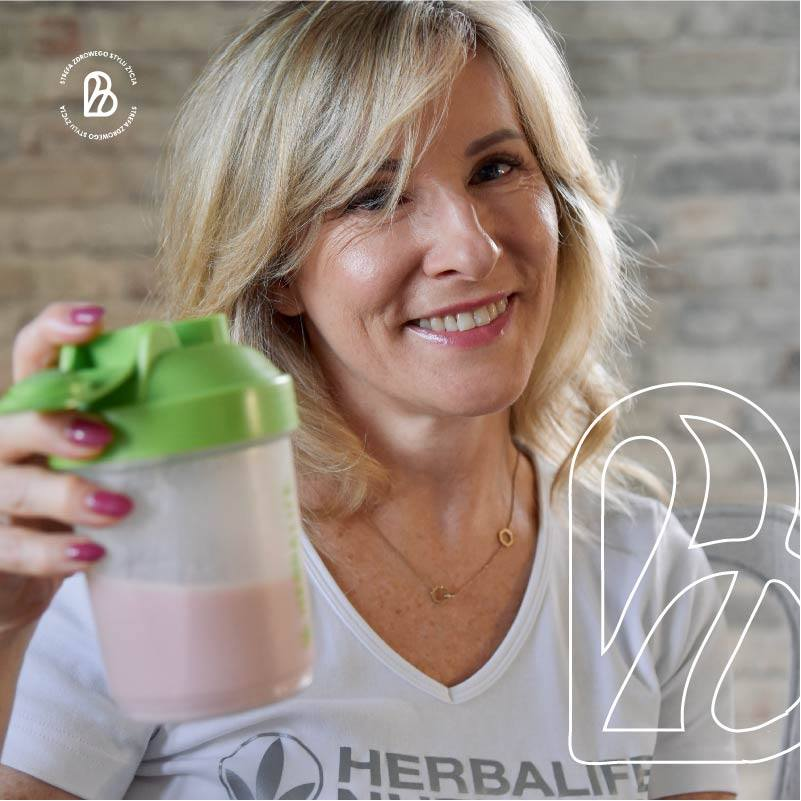

Wierzę w proste, ale znaczące wybory, które zmieniają nasze życie na lepsze

Już ponad 15 lat temu odkryłam jak odżywianie, i (nawet lekka) aktywność fizyczna wpływa na mój wygląd, a co najważniejsze, na to jak się czuję. Byłam wiecznie zmęczona, piłam po 6-8 kaw dziennie, żeby dotrwać do końca pracy, miałam poważne problemy z układem pokarmowym (zdiagnozowany przewlekły zespół jelita leniwego) i żaden z lekarzy nie dawał mi szansy na powrót do zdrowia, o płaskim brzuchu nawet nie wspomnę. Właśnie wtedy spotkałam osobę, która powiedziała, że mi pomoże. Dzięki jej zaleceniom zaczęłam dożywiać siebie i moją rodzinę produktami odżywczymi i naturalnymi suplementami, które stosujemy do dziś. Zaczęłam pogłębiać wiedzę jeżdżąc na szkolenia związane ze zdrowym trybem i stylem życia. Cały ten czas wspieram tych, którzy chcą zmienić swoje nawyki żywieniowe i poczuć się lepiej; wszystkich, którzy marzą o lepszej odporności, zrzuceniu zbędnych kilogramów i dożywieniu organizmu. Jesteśmy dla Was! Jeśli chcecie zapytać o zdrowe odżywianie, dożywianie, podnoszenie odporności z suplementami, chętnie podzielimy się swoją wiedzą i doświadczeniem.